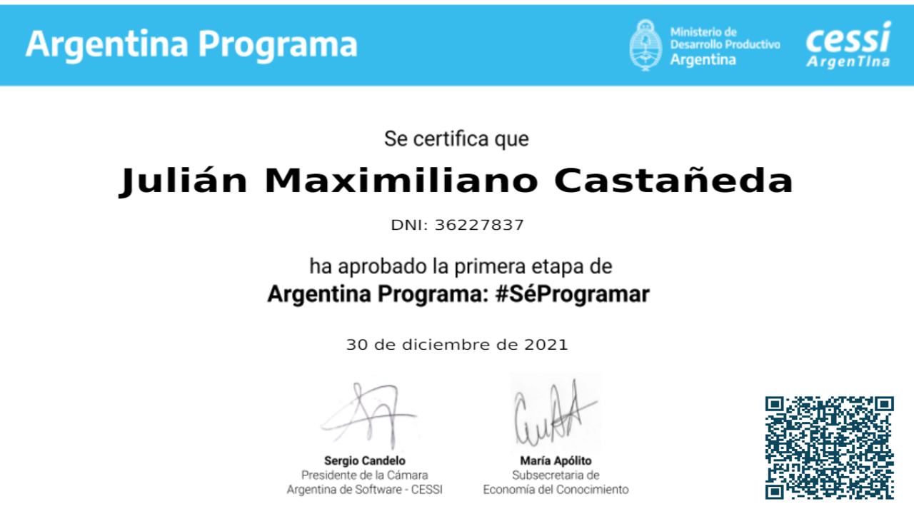
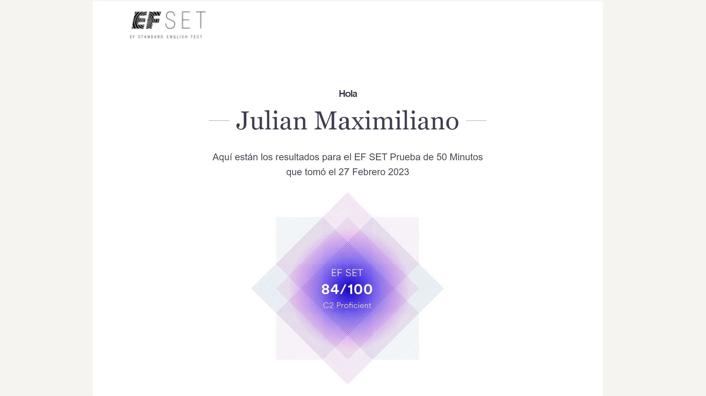
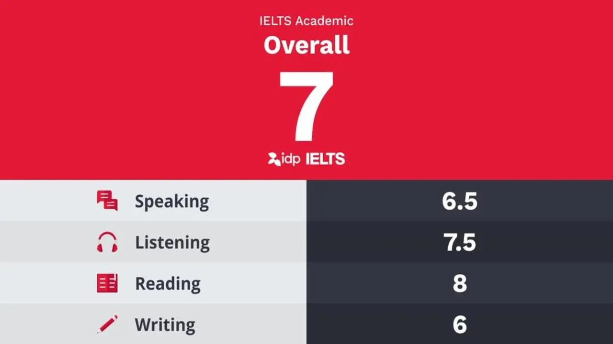

Certifications




Inflation-adjusted amount calculator with Argentina rates. Minimalist design created with the PicoCSS framework.
Design created with CSS and JavaScript. Functional back-end using JAVA. Project done in collaboration.
Dedicated freelance front-end developer, currently advancing my studies in web development through various certifications. I have successfully completed multiple personal projects, demonstrating my experience in HTML, CSS, JavaScript, and modern frameworks like Tailwind CSS and Bootstrap.
During my time as an Audit Senior at a Big Four firm, I developed skills in project management, team leadership, and effective communication. I led audit teams, coordinating efforts and ensuring the delivery of high-quality results under strict deadlines.
Collaborated closely with various departments and clients, strengthening my communication and adaptability skills. These experiences have honed my ability to work in a team, manage multiple tasks, and maintain a results-oriented focus.